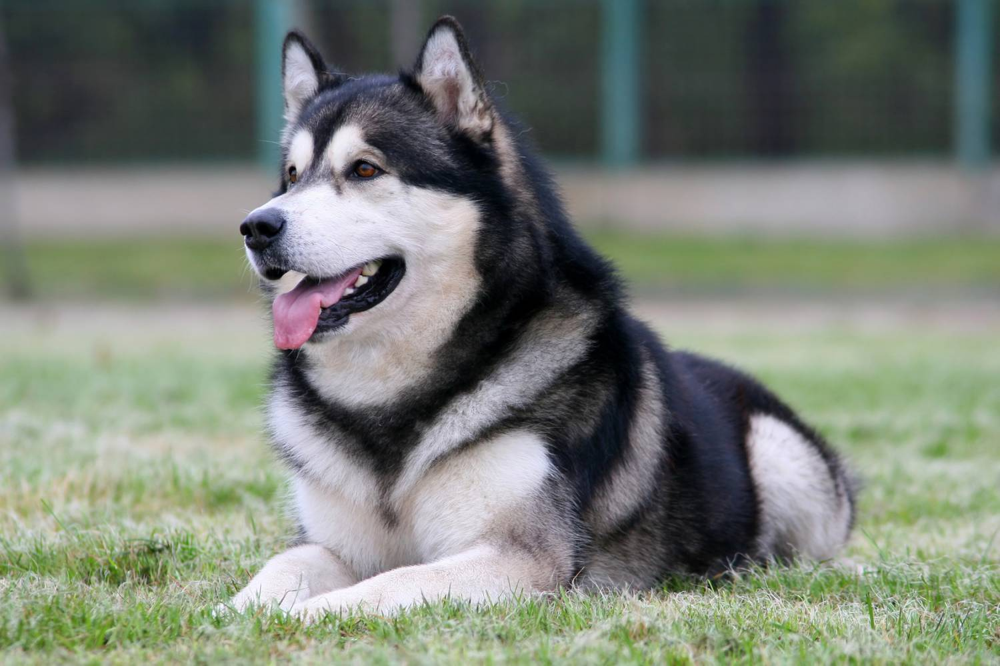

Собака - друг человека
Аборигенные породы собак - животные, сформировавшиеся в результате естественного отбора на обособленных территориях. Вмешательство человека в их развитие либо минимально (попытка сохранения вида), либо полностью отсутствует.
Селекционно выведенные породы собак - животные, появившиеся в процессе селекции - выбора и разведения животных с определенными признакам.
Классификация пород собак
| Аборигенные породы |
Селекционно выведенные породы |
| Сиба-ину |
Такса |
Дорги (такса + корги) |
| Аляскинский маламут |
Корги |
| Самоед |
Померанский шпиц |
Помски (померанский шпиц + хаски) |
| Сибирский хаски |
Йоркшерский терьер |
| Афганская борзая |
Пудель |
Лабрадудль (лабрадор + пудель) |
| Восточно-сибирская лайка |
Лабрадор-ретривер |
| Аляскинский маламут |
Бассет-хаунд |
Бассет-пей (бассет-хаунд + шарпей) |
| Басенджи |
Шарпей |
Породы собак

Аляскинский маламут
Аля́скинский маламу́т (англ. Alaskan Malamute) — порода ездовых собак аборигенного типа, предназначенная для работы в упряжке, одна из древнейших пород собак. Своим названием аляскинский маламут обязан эскимосского племени малемиутов. Исследователи Севера Америки и Канады XIX века часто сообщали о замечательных качествах рабочих собак, приобретённых у этого племени, их исключительном здоровье, физической выносливости, устойчивости к самым экстремальным погодным условиям. С 2010 года маламут является символом штата Аляска.

Австралийский лабрадудль
Австралийский лабрадудль (англ. Australian Labradoodle) - порода собак, главным предназначением которых являлась служба в качестве собаки-поводыря. Сейчас это терапевтическая собака, поисковик-спасатель, компаньон для пожилых людей и просто домашний питомец. Она унаследовала от своих родителей (лабрадор и пудель) самые ценные качества. От пуделя досталась красивая гипоаллергенная шерсть, от лабрадора-ретривера – идеальный характер. Родина лабрадудля – Австралия.

Вельш-корги
Вельш-корги (англ. Welsh Corgi) относятся к семейству миниатюрных овчарок, обладают отличными охранными качествами. Это пастушья собака, происхождением которой считается Уэльс, административная часть Великобритании. Питомцы этой породы умны и проницательны, понимают настроение хозяина. Они всегда отвечают взаимностью на внимание и ласку, а с теми, кто их недолюбливает, стараются держать дистанцию. Характеристики породы вельш-корги включают описания двух основных разновидностей этих собак – корги-кардиганов и корги-пемброков.
Аборигенные породы
Селекционные породы
Поиск лучшего друга!